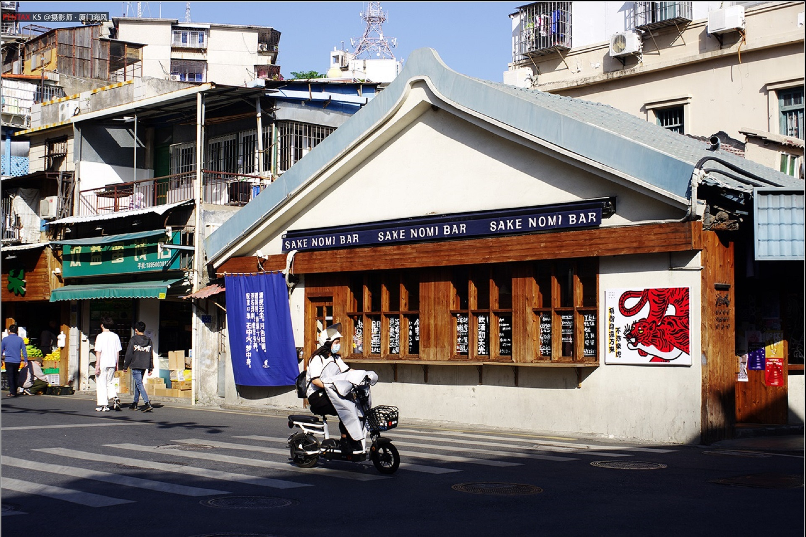
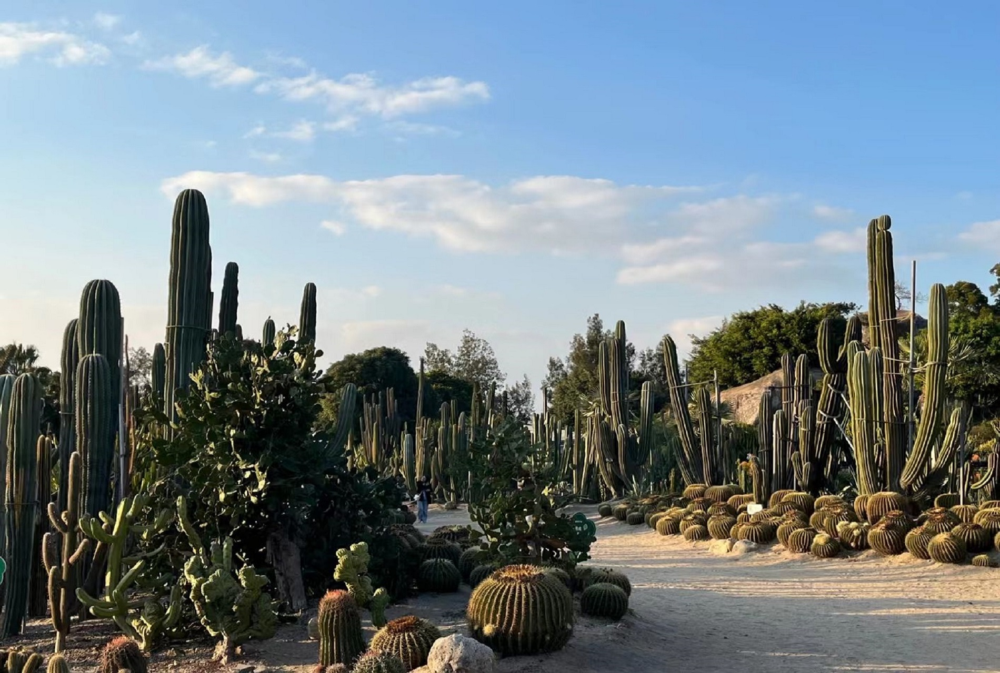

|  |
艺术西区是厦门沙坡尾避风坞边上兴起的年轻文化艺术区，位于厦门市沙坡尾60号。 这里包含了雕塑、陶艺、版画、服饰设计、手作木艺、动漫、音乐、纸艺、影像等艺术元素，以工作室的形式免费向公众开放，并且由各个领域的艺术家亲自教大家创作--每个人都可以把自己创作的艺术品带回家。除此之外，艺术西区还提供自由滑板、音乐现场、复古市集等城市潮流元素。大家在这里的每一次体验，都将是生活与艺术的交融。 厦门每周文艺，尽在艺术西区 |
|  |
厦门园林植物园，位于厦门万石山，始建于1960年，占地2.27平方公里，已开发约120公顷。 万石植物园萃集了厦门大小八景的"天界晓钟"、"高读琴洞"、"万石锁云"、"中岩玉笏"、"太平石笑"诸景点，且有百十余处摩岩石刻。 根据科研和游览需要，园内依次安排了松杉园、玫瑰园、棕榈园、荫棚、引种植物区、药用植物园、大型仙人掌园、百花厅、兰花圃等20多个专类园和种植区，栽培了3000多种热亚热带植物，其中有被人称为"活化石"的水杉、银杏。有世界三大观赏树--中国金钱松、日本金松、南洋杉，以及名贵的仙人掌等奇花异木，是一座秀丽多姿、四季飘香的游览园林 |